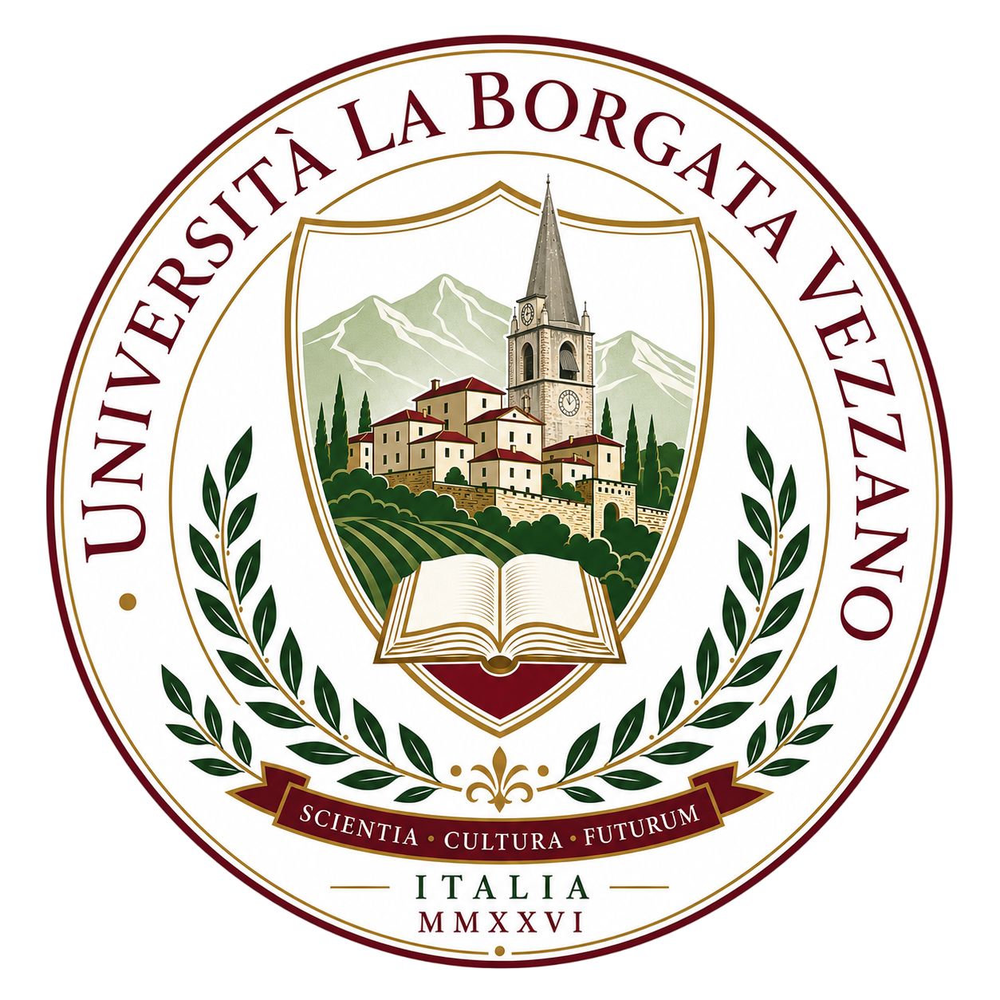

UNIBV · VEZZANO, TRENTINO
Università
La Borgata Vezzano
University of
La Borgata Vezzano
Scientia · Cultura · Futurum
Ricerca, formazione e cultura nel cuore del Trentino.
Research, education and culture in the heart of Trentino.

SCIENTIA · CULTURA · FUTURUM
Un luogo per le idee. Una comunità per il sapere.A place for ideas. A community for knowledge.Via Roma 61/D · Vezzano (TN) · Trentino, ItaliaVia Roma 61/D · Vezzano (TN) · Trentino, Italy
IL NOSTRO ATENEOOUR UNIVERSITY
Pensiero indipendente, dialogo tra le Alpi
Independent inquiry in an Alpine community
Tra le Alpi del Trentino, UNIBV riunisce una piccola comunità accademica dedicata alla ricerca in matematica e fisica. L’autonomia del pensiero e lo scambio di idee guidano lo studio: un dialogo aperto tra discipline, in un luogo che invita alla riflessione.
Set in the mountains of Trentino, UNIBV is a small academic community exploring questions in mathematics and physics. Independent thought and the exchange of ideas shape its approach to research, with room for sustained reflection and conversation across disciplines.
Ricerca
Research
Idee condivise, domande aperte e prospettive interdisciplinari per approfondire la fisica, la matematica e i loro metodi.
Shared ideas, open questions and interdisciplinary perspectives on physics, mathematics and their methods.
EsploraExplore →Formazione
Education
Percorsi di studio che mettono al centro il pensiero critico, il dialogo e l’arte di fare buone domande.
Study pathways centred on critical thinking, dialogue and the art of asking good questions.
EsploraExplore →Vita universitaria
University life
Una comunità raccolta, tra conversazioni, letture e pause caffè che talvolta diventano seminari.
A close-knit community of conversations, reading and coffee breaks that occasionally become seminars.
EsploraExplore →UNIBV / NOTIZIENEWS
Dalla nostra comunità
From our community
Approfondimenti e prospettive di ricerca.Research insights and perspectives.
RICERCARESEARCH
Prospettive tra fisica e matematica
Perspectives across physics and mathematics
Modelli, metodi analitici e simulazioni per esplorare i sistemi fisici.
Models, analytical methods and simulations for exploring physical systems.
COMUNITÀCOMMUNITY
Dialoghi in Borgata
Conversations in the Borgata
Uno spazio editoriale per domande, idee e discussioni oltre i confini delle discipline.
An editorial space for questions, ideas and conversations across disciplines.
FORMAZIONEEDUCATION
Il prossimo passo nella ricerca
Your next step in research
Scopri le aree di ricerca e le informazioni per la candidatura al dottorato.
Explore research areas and information about applying for doctoral study.
DOTTORATODOCTORAL STUDY
Ogni ricerca comincia con una domanda.
Every research journey begins with a question.
Esplora le aree di ricerca e la candidatura UNIBV.
Explore UNIBV research areas and the application process.